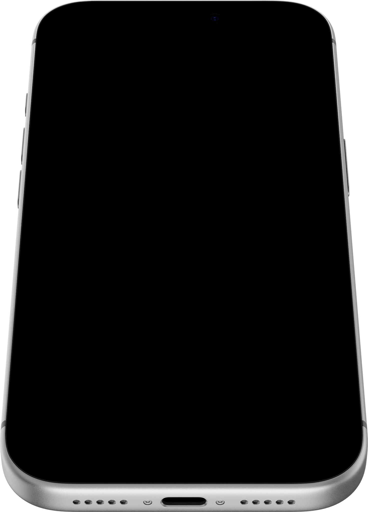
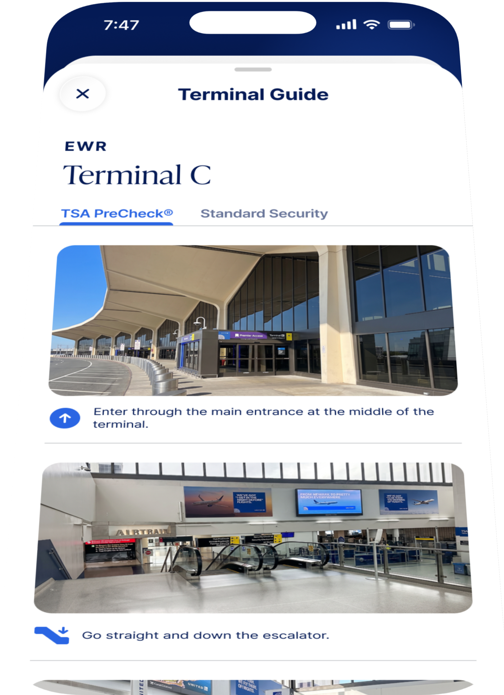

Terminal Guide
A step-by-step in-app guide that helps CLEAR+ Members navigate to their terminal's CLEAR Lane.
A guided in-app experience that walks CLEAR+ Members through the airport terminal step-by-step with detailed directions and accompanying imagery.




Members frequently arrived at airports unable to accurately locate the CLEAR Lane, increasing user frustration and anxiety, which impacted the arrival time to their gate.
As lead product designer on the project, I owned the flow mapping from airport arrival to reaching the CLEAR Lane at their terminal's Security Checkpoint, drove the UI and UX for the in-terminal guide screens, and partnered with engineering to develop HALOS, an internal operations tool for updating the terminal guides.
We explored a single persistent credential tray vs. a step-aware guide that changes per checkpoint. We chose the step-aware approach because testing showed members didn't reliably know which checkpoint they were at.
Over 8 weeks, I designed a calm, system-driven assessment that helps high-achieving adults turn abstract values into concrete decisions.
Airport network variability, needing the guide to work in offline / low-signal environments, and coordinating with TSA / airport partners all impacted how we designed and developed the experience.
The initial experience provided users with static information, whereas the new experience offers dynamic content that changes based on closures or other airport delays.
The Terminal Guide reduced member confusion at busy checkpoints by surfacing exactly the right credential at the right moment, cutting support contacts related to in-terminal navigation by 30%.
Live and iterating—future state versions will include an AI summary of the directions to provide more at-a-glance directions for users.